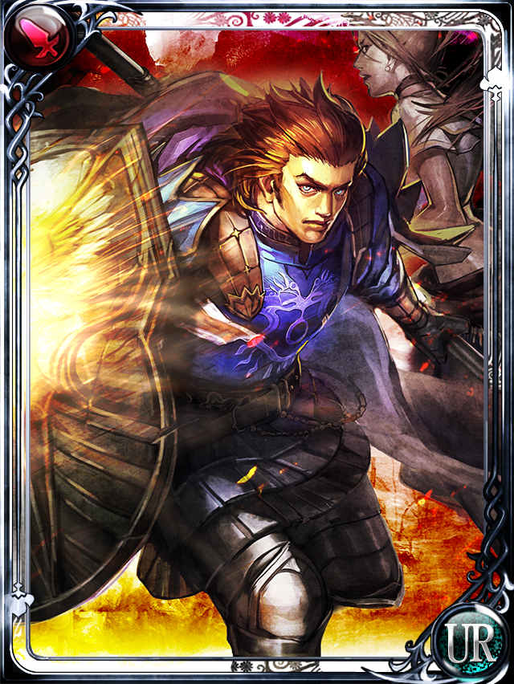

オイゲン
ホーム > ミンサガ index > マルディアスの歴史 > オイゲン
→英雄ミルザからの続き。
サルーイン討伐後のオイゲン
ゲーム中の詩人の語りに「オイゲン公と彼の盾の語り」というものがあります。この中で語られている通り、オイゲンはサルーイン後の世界の再建に尽力した人物で、騎士団の創設者です。

オイゲン（画像はエンサガのもの。こちらから抜粋）
#ロマサガ #ミンサガ #ミンサガリマスター
— 河津秋敏 (@SaGa30kawazu) November 16, 2022
ミルザがサルーインを封じる事に成功した瞬間、オイゲンはそれを感じ取りました。肩に掛かっていた重荷が急に無くなったような解放感を感じたのです。オイゲンは喜ぶと同時に涙しました。それは真の友ミルザとの永遠の別れを意味していたからです。
#ロマサガ #ミンサガ #ミンサガリマスター
— 河津秋敏 (@SaGa30kawazu) November 17, 2022
しかしオイゲンに悲しんでいる時間はありません。支援者と共にイナーシーの西岸に向かいます。この地の魔物を追い、農地を広げ、街を作り、イナーシーの交易で豊かな暮らしを実現する。ミルザの思い描いた未来を作り出す事にオイゲンは生涯を懸けます。
#ロマサガ #ミンサガ #ミンサガリマスター
— 河津秋敏 (@SaGa30kawazu) November 18, 2022
騎士団の創設者はオイゲンだと言われますが、彼の時代にはまだ組織的な騎士団は出来上がっていませんでした。彼はリーダーとしては他人に厳し過ぎたので、それほど多くの人を周りに集める事が出来なかったのです。
#ロマサガ #ミンサガ #ミンサガリマスター
— 河津秋敏 (@SaGa30kawazu) November 19, 2022
オイゲンの植民活動は成功し、いくつかの町も出来上がります。彼は
その最も大きい町をミルザブールと名付けます。ミルザの街。ミルザが生きていたら許さなかったでしょうが、この名は全ての騎士にとって胸に刻むべきものなのは間違いありませんでした。
#ロマサガ #ミンサガ #ミンサガリマスター
— 河津秋敏 (@SaGa30kawazu) November 20, 2022
オイゲンはミルザブールを離れ、遥か南のバルハラントの近辺に新たな拠点を築こうとします。若い騎士が増え、騎士団が形成されていく中で自分の居場所が無くなったと感じたのでしょう。新天地で活動を始めたオイゲンの前に奇妙な騎士志望者が現れます。
→次は竜騎士。
→年表に戻る。